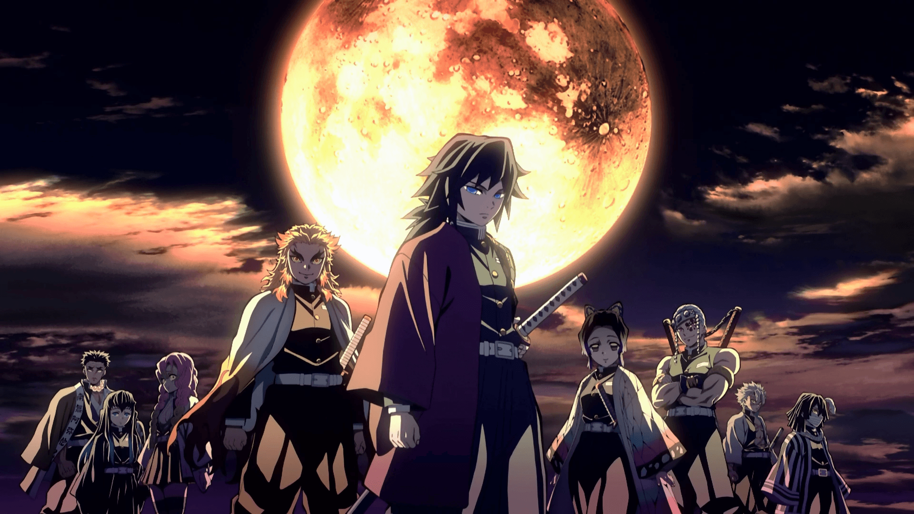

About Giyu
Giyu is a Demon Slayer. He is an amazing swordsman. His Breathing-Style is the Water-Style.
Giyu and the Hashira
Giyu's Characteristics
- He is a calm-minded person
- He doesen't smile a lot :(
- He is very skilled in Demon Slaying
Giyu's Friends
Giyu has some powerful friends. I think his best friend was Sabito. Giyu probably misses him a lot. Click the links below to know more about them